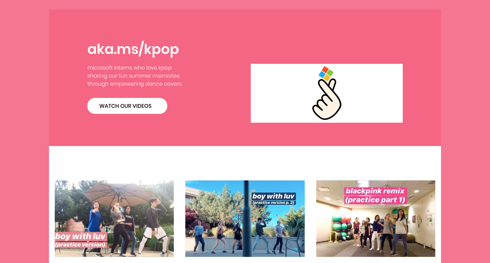
aka.ms/kpop
Languages: HTML/CSS
Oh my my my~ Watch some cool videos of Microsoft Interns dancing to kpop covers :)
Side hobby developed in the summer of 2019. #Empowered |
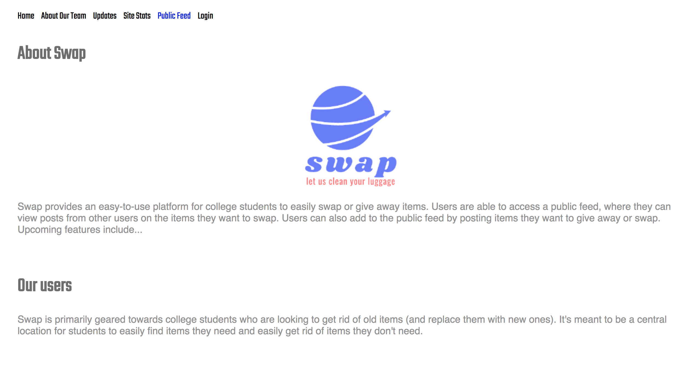
Swap
Languages: Java Servlets, Javascript, HTML/CSS | Tools: Google App Engine
Web application focused on crafting an efficient material exchanging process for post-graduates and early career
students. Utilize Google Maps API, ML Image Analysis to sort image and text data from end-to-end users. |
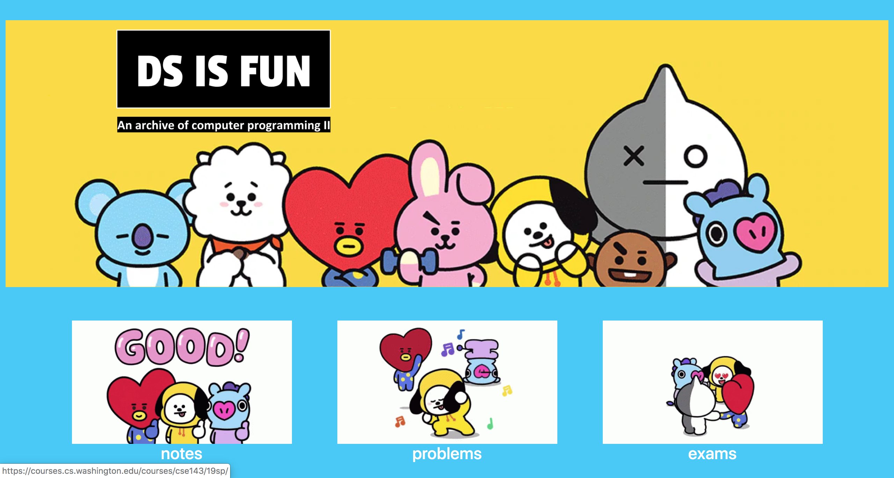
DS IF FUN
Languages: Bootstrap, HTML/CSS
Outline of CSE 14X classes especially in data structures and worksheets + explanations for coursework. |
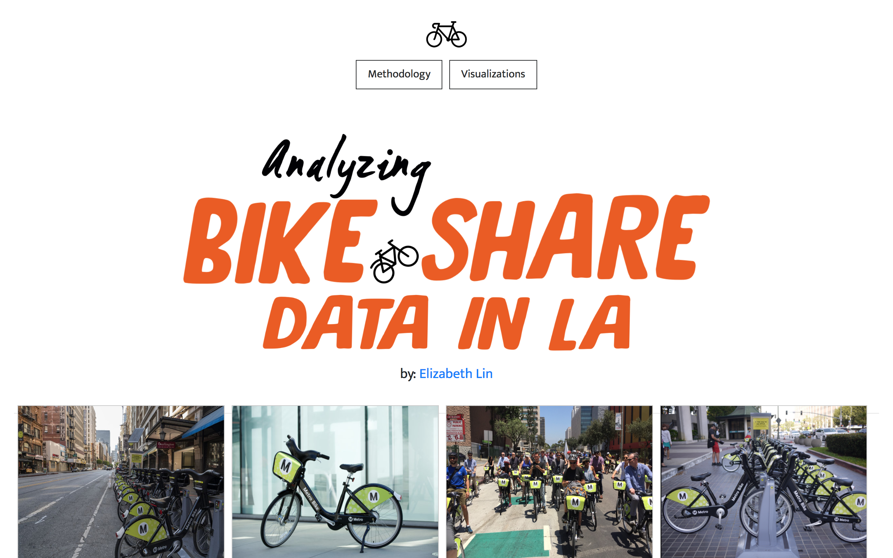
Analyzing Bike Share Data in LA
Languages: R, Python | Tools: Tableau Desktop, RStudio
Submission for Capital One Engineering Summit Challenge. Created a web application to understand Bike Share Data in LA.
Use RStudio to perform data wrangling and separate dataset into various data frames for analysis.
Calculate values like average distance traveled of all bikers using latitude/longitude coordinates (using Python scripts). Create data
visualizations to proposed questions and additional graphs for
supplement analysis. |
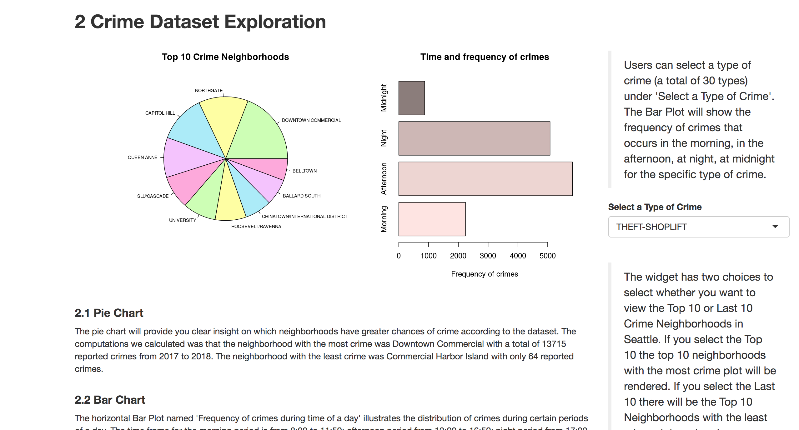
Public Safety in Seattle
Languages: R | Tools: Shiny, Tableau Desktop
INFO 201 Final Project. Crafted a Shiny App in R that represented visualization of crime and fire data in Seattle from 2017 to 2018.
Utilized R to display charts of the crime amounts in different neighborhoods in Seattle. This interactive platform allows clients to understand the
level of danger in Seattle regions and the prevalency of different types of crime. This data is from police reports and fire calls collected by the
City of Seattle. |
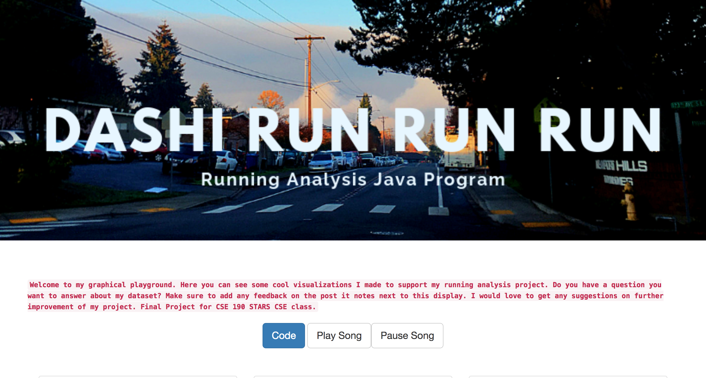
Dashi-Run-Run-Run
Languages: Python | Tools: Tableau
As an avid runner, I wanted to utilize Tableau Desktop as an efficient and easy-to-use tool to visualize my running habits.
I was able to answer several questions using the dynamic toolset to craft conclusions with my data. I compiled my data in a CSV
file and imported into Tableau for further analysis and design. |
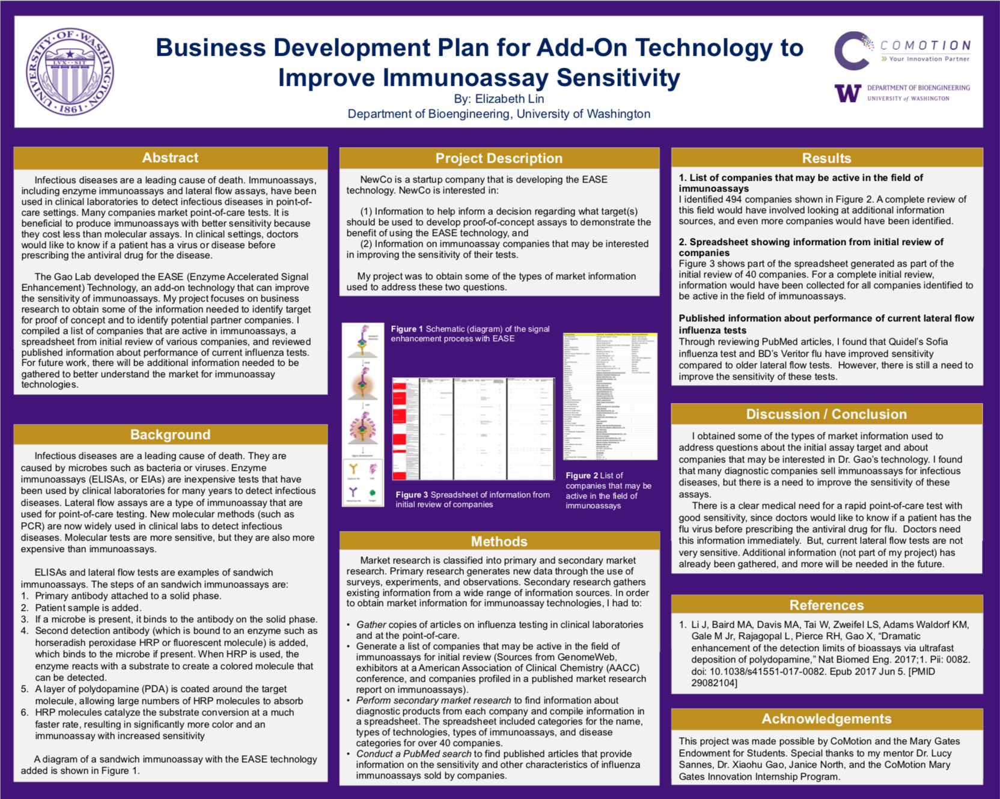
Business Development Plan for Add-On Technology to Improve Immunoassay Sensitivity
Tools: Market Research, Excel, Powerpoint, Data Analysis
My final poster for the 2018 CoMotion Mary Gates Innovation Internship, presented at the Summer Undergraduate Research Poster Session
on August 15, 2018 at Mary Gates Hall Commons. |
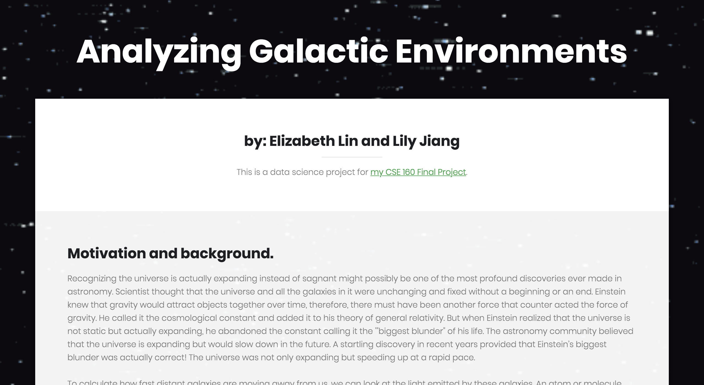
Analyzing Galactic Environments
Languages: Python | Tools: Sci-Kit Learn
My final project for my CSE 160 Data Programming class. Our assignment was to utilize a selected dataset to represent our data. I worked
with a partner to create a graphical representation of our galaxy data which hundreds of rows and analyze our overall results to
craft results to our proposed research questions. |
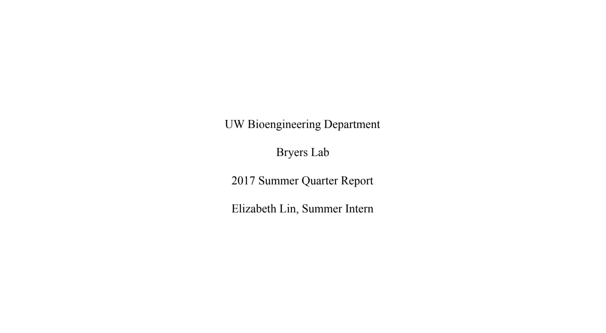
Testing Biofilm Formation on Various Test Surfaces
Tools: Google Docs, Culturing Bacteria, Lab Etiquette
Lab report: I worked in the Bryers Lab, where
I was assigned a project to analyze bacterial adhesion on various test surfaces. Through weeks of experimentation and immersive
learning on bacterial biofilms, I was able to run my assays and view bacterial growth through spectrocopy. |
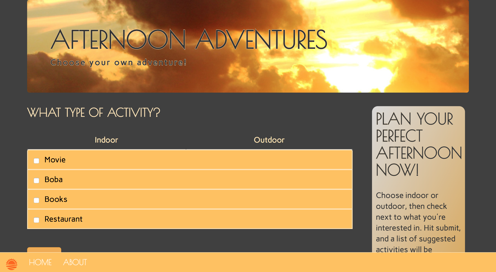
Afternoon Adventures
Languages: HTML, CSS, JavaScript, Google AppEngine
Created at Google CSSI (Computer Science Summer Institute) as a culminating final project. I worked with a team of three students
to host a static website using Google AppEngine. The goal of our app was to give college students around the Greater Seattle area
ideas of where to hangout on the weekends or on their break times. |
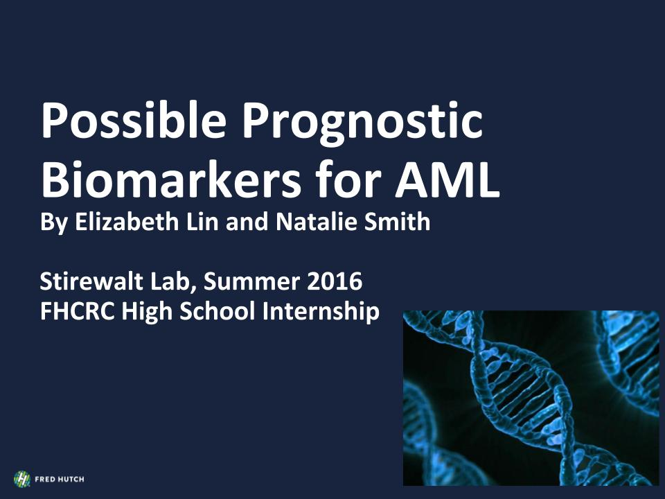
Possible Prognostic Biomarkers for AML
Tools: Excel, Google Sheets, PCR, Gel Electrophoresis, Gene Mapping
Culminating Final Presentation for Fred Hutch High School Internship. Details my work in the Stirewalt Lab where I detected biomarkers
for Acute Myeloid Leukemia treatment. Worked under the supervision of mentor Era Pogosova and PI Derek Stirewalt. |